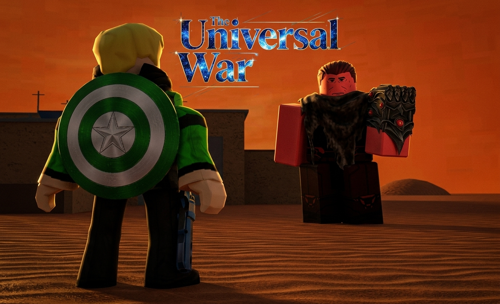
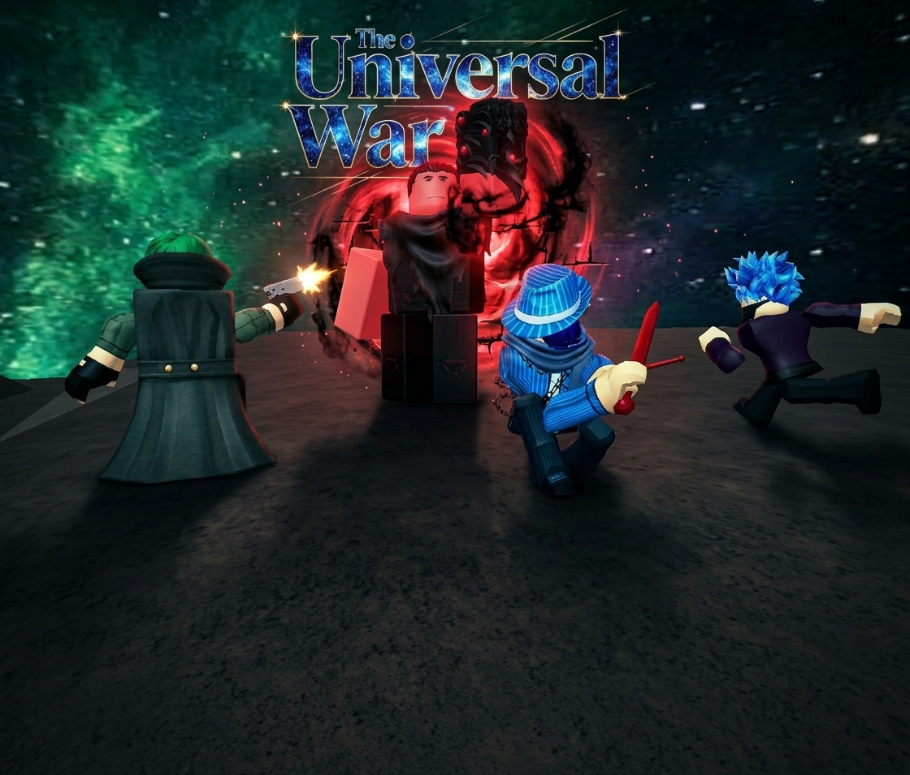
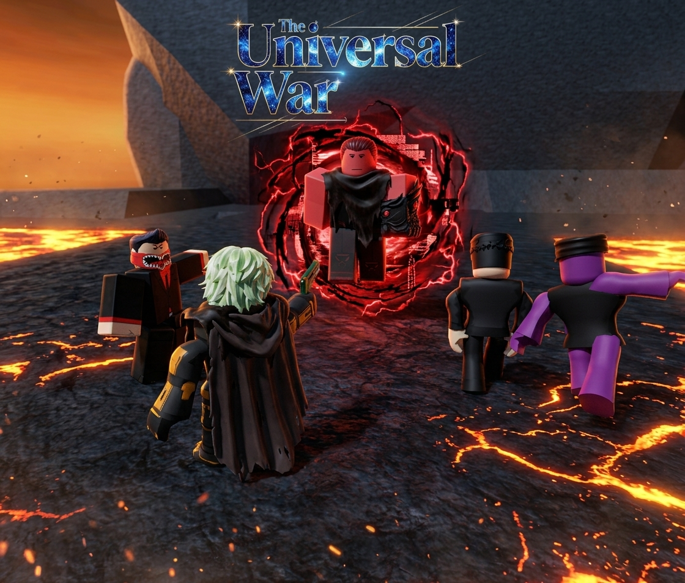
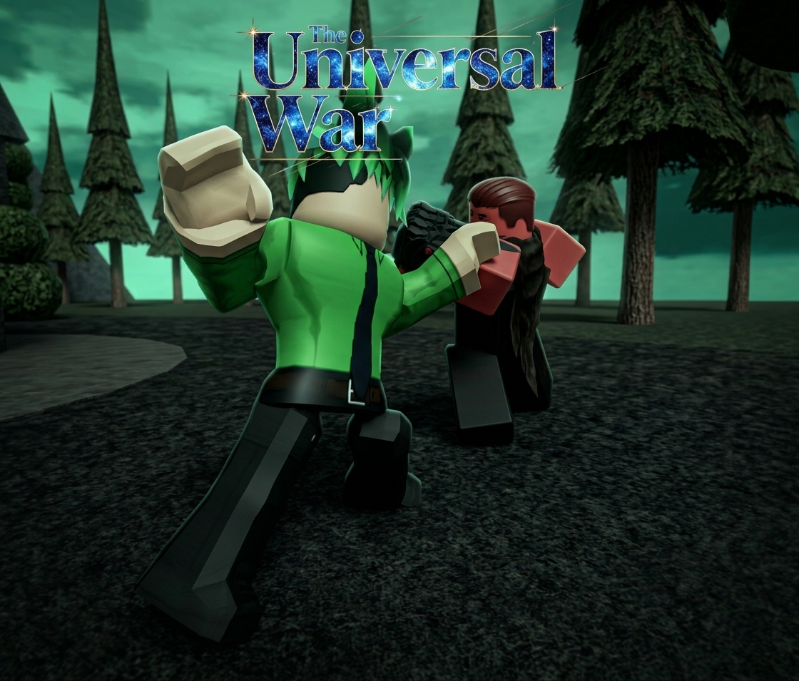

The Universal War — Chapters 1–20
Saga 4: The Universal War Saga (Story 1 - Complete Finale)




Chapter 1: The Disturbance on Vor'kun
High above the desolate dunes of the desert planet Vor'kun, spatial sensors spiked with unprecedented energy. At Guardians HQ, Seron Darkness detected a massive reality manipulation disturbance emanating from an ancient sector. Recognizing the potential threat, Seron immediately dispatched super soldier Connor Violet (Captain Violet)—armed with his impenetrable Serlium shield and high-output blue cyber revolver—alongside Casey Vigor (The Isotope Hero), who wielded volatile Isotope Nuclear energy.
Chapter 2: The Vault of the Universal Ender
Trekking across the scorching sands of Vor'kun, Connor and Casey arrived at a rusted, subterranean Vor'kor military base. Breaking through the reinforced doors, they entered a sprawling ancient vault just as a titan stirred in the shadows. Towering at an imposing 8'3", Destrov—the ruthless conqueror known as The Universal Ender—stood before an ancient pedestal. With absolute calm and inescapable authority, Destrov unsealed the Universal Ender Gauntlet and slipped it onto his massive hand, reality bending slightly beneath its weight.
Chapter 3: Clash Against a Titan
Knowing the danger of the artifact, Connor raised his Serlium shield and opened fire with his blue cyber revolver while Casey charged his fist with roaring Isotope Nuclear flames. They struck with relentless speed, combining tactical military precision with raw atomic force. Yet Destrov barely flinched. With a single, stoic sweep of his gauntleted arm, Destrov shattered Casey's nuclear blast and struck Connor's shield, embedding the super soldier into the concrete wall and overwhelming both heroes in seconds.
Chapter 4: The Threat of the Universe Restored
Standing over the battered Guardians with unshakeable conviction, Destrov looked down at Connor with a philosophical coldness. "You fight for a broken cosmos clinging to its flaws," Destrov stated calmly, his voice echoing through the ruined base. "This universe is fundamentally imbalanced. Once the gauntlet's power is complete, it will be restarted—reformed in my vision." As darkness encroached on Connor's vision, Destrov's chilling warning was the last thing he heard before passing out completely.
Chapter 5: Emergency Extraction & The Awakening
When signal contact went silent, a Guardian emergency extraction team consisting of Sylas Duskbloom and Akira Fujimoto breached the vault, securing the unconscious duo and rushing them back to The Guardians Citadel. Connor and Casey awakened in the medical bay to find Seron Darkness standing over them, his eyes serious. Still recovering from the impact, Connor looked up at Seron and delivered the grim news: Destrov has the gauntlet, and he intends to rewrite reality itself.
Chapter 6: The Rally of the Guardians
Following the dire report brought back from Vor'kun, Seron Darkness initiated an emergency level-one mobilization protocol, summoning every single Guardian to the main assembly hall of the Citadel. Hundreds of warriors filled the grand arena as Seron stepped up to the podium, his expression grim. He detailed the theft of the Universal Ender Gauntlet and revealed that their orbital scans had successfully pinpointed Destrov's surging reality signature—he was waiting on the barren surface of the Zavila Galaxy Asteroid.
Chapter 7: Arrival on the Asteroid
Mass transport portals rifted directly above the jagged terrain of the Zavila Galaxy Asteroid, deploying the full strike force of the Guardians. Sitting atop a massive throne carved from cosmic stone sat Destrov, calm and unmoved by the army surrounding him. As the Guardians encircled the perimeter, Destrov stood up, his 8'3" frame towering over the battlefield. "You come in numbers to defend a dying reality," Destrov monologued smoothly, raising his gauntleted fist. "You view my vision as destruction, yet it is the ultimate mercy—a complete rebirth free from flaw."
Chapter 8: The Vanguard Assault
Refusing to let the titan finish his speech, an elite vanguard charged forward simultaneously. HawkBat Rogue (Scarlet Elemental) hurled intense bursts of crimson flame, while Ral Awakening (The Crimson Swordsman) rushed in with lightning-fast sword strikes. Beside them, Angelis "Shifter" Darkness (The Night Hunter) unleashed relentless heavy fire, alternating between a SPAS-12 shotgun, Desert Eagle, and close-quarters crowbar strikes. Meanwhile, Michael Rogue (The Pocket Watch Time Lord) attempted to lock Destrov’s movements in localized temporal loops.
Chapter 9: Fall of the Elite
Joining the fray, Mason Darkness (The Xanian Swordsman) slashed with raw Xanian energy, while Arsenio Beau Innes shifted forms to strike from the flanks. From long range, Alex Chronos (Chronos Sniper) fired high-caliber time-bending rounds, complemented by Kauko Roni Kulmala (Shadow Samurai King) slicing through the darkness with dark blade strikes. Despite the overwhelming onslaught, Destrov activated the Universal Ender Gauntlet. A shockwave of reality-distorting energy erupted from his palm, instantly breaking their formations, shattering their attacks, and laying most of the elite strike force flat on the cosmic rock.
Chapter 10: The Ambush on Ignis Vortem
Tracking Destrov’s residual energy signatures, a secondary strike team arrived on the volcanic world of Ignis Vortem. The intercept team consisted of Jotaro Kanjo (The Star Requiem Stand User), Angelo Pierce (The Space Pirate Emperor Contingency Planner), Aventis Pierson (The Crimson KnuckleDuster), Nathan Ice (The Ice Emperor), Dallas Red-Star (The Dark Blue Energy Brawler), Kole Rogue (The Arsonist with the fire axe), David Kaine (The Arsonist with a fire katana), Tom Letanio (The Stoic Stand User of Indigo Fist who stops time and uses blue phoenix abilities), David Spike (The Black Nebula and The Entropy), Miles Church (The Healer), Team Crusader members Peter Hydros (Electro Boy) and Esteban Maverick (The Gunslinger), alongside Royal Demetrios (The 2nd Time Breaker God). They cornered Destrov just as he claimed one of the last ancient artifacts required to complete his gauntlet's absolute potential.
Chapter 11: The Perfect Universe Speech
Holding the glowing relic above the magma rivers, Destrov turned to face the reinforcements. Slotting the artifact into the Universal Ender Gauntlet, he watched the cosmic power surge through his massive frame. He stared cold-eyed at the strike team and began his monologue: "Your resistance is built on sentimental attachment to a chaotic, decaying existence. I seek to construct a perfect universe—one purified of suffering, weakness, and imperfection. You throw yourselves into the meat grinder for a reality that is already condemned."
Chapter 12: Clash of the Champions
Ignoring his speech, the intercept team initiated a coordinated assault. Tom Letanio froze time for three seconds, summoning Indigo Fist to unleash a barrage of blows combined with roaring blue phoenix flames, while Jotaro Kanjo sent Star Requiem to strike from the flank. Angelo Pierce executed rapid-fire tactical suppressor rounds as Esteban Maverick and Peter Hydros from Team Crusader provided suppressive gunfire and electrical overcharges. Royal Demetrios unleashed raw Time Breaker energy, David Spike channeled entropy force, and Nathan Ice froze the lava beneath Destrov's feet to lock him in place.
Chapter 13: Absolute Dominance
Despite their vast powers and coordinated assault, Destrov raised the Universal Ender Gauntlet and pulsed its newly amplified power. The resulting wave of reality warp shattered Tom's time freeze, absorbed Indigo Fist's phoenix flames, and crushed Star Requiem back into Jotaro. Destrov swiped through the air, sending shockwaves that shattered Nathan's glaciations and threw Dallas Red-Star, Aventis Pierson, David Kaine, and David Spike across the burning crater. Miles Church attempted to channel group healing energy, but Destrov struck the ground, sending a massive shockwave that left almost every warrior unconscious and severely wounded.
Chapter 14: Departure for OverDarkis
Standing amid the fallen strike team, Destrov inspected the gauntlet as its power stabilized. He looked down at the defeated champions without a shred of malice—only absolute, cold certainty. "Only one piece remains," Destrov muttered aloud. "The final artifact rests on OverDarkis." Flexing his fist, Destrov tore open a dark spatial rift pointing directly toward the shadowed realm of OverDarkis and stepped through, leaving the volcanic world behind.
Chapter 15: Warning the Time Breaker God
Among the debris and ash, Kole Rogue, battered and leaning heavily on his fire axe, forced himself up as the last Guardian standing. Clenching his fist through the intense pain, Kole activated his emergency comms link to Guardians HQ. "Seron... come in, Seron," Kole gasped weakly into the radio. "Destrov took the artifact on Ignis Vortem. He defeated everyone... he's heading to OverDarkis now for the final piece. You have to contact Andrew OverDark right now... warn the Time Breaker God before it's too late!"
Chapter 16: Arrival on OverDarkis
Destrov emerged from the dark spatial rift onto the twilight-drenched soil of OverDarkis, stepping toward the throne plaza where the final artifact lay. But he was not alone. Waiting in the center of the obsidian court sat Andrew OverDark—also known as Black Rose, the first Time Breaker God. Andrew sat menacingly, surrounded by a suffocating aura of absolute temporal instability. Time distorted, buckled, and fractured around Andrew's presence, turning the surrounding atmosphere into a chaotic storm of temporal shifts. Andrew looked up at Destrov, his gaze filled with pure disdain, viewing the 8'3" conqueror as nothing more than a pathetic, grandstanding waste of space who wanted to annihilate the entire universe over a meaningless philosophy.
Chapter 17: Clash of the Titans
Refusing to be judged, Destrov raised the Universal Ender Gauntlet and charged forward, channeling the full, reality-warping power of the gauntlet into a devastating, universe-shattering punch aimed directly at Andrew's head. The force of the strike created a localized reality implosion, but when the dust settled, Andrew hadn't even budged. Standing at a towering 8'7"—easily surpassing Destrov in sheer size and terrifying presence—Andrew tanked the full-force blow effortlessly without taking a single scratch. In that horrifying moment, Destrov realized the cold truth: he was completely outmatched.
Chapter 18: Destruction of the Gauntlet
Before Destrov could pull his arm back, Andrew reached out and clamped his hand onto Destrov's gauntleted wrist. Channeling raw, volatile Time Breaking energy through his grip, Andrew surged temporal decay directly into the Universal Ender Gauntlet. The ancient artifact groaned under the pressure before shattering into harmless dust and raw energy. With brutal, unyielding strength, Andrew flared his power and completely ripped Destrov's entire arm clean off his body, causing the conqueror to stumble back in agony as dark cosmic blood spilled onto the stone.
Chapter 19: The Execution of the Conqueror
"Your grand vision ends here, worm," Andrew growled, his voice echoing with the crushing weight of shattered timelines. Grabbing Destrov by the collar with effortless power, Andrew slammed him onto his knees. Without a second of hesitation, Andrew brought both of his massive, energy-clad hands around Destrov's head. With a single, devastating surge of raw violent force, Andrew squeezed and crushed Destrov's head in completely, ending the threat of The Universal Ender instantly and permanently as the conqueror's lifeless body collapsed onto the dark soil of OverDarkis.
Chapter 20: The Threat Handled
Later at the Guardians Citadel, Seron Darkness and the high council stood around the war room table, urgently preparing emergency deployment plans and reviewing casualty reports from Ignis Vortem. Suddenly, a dark temporal rift opened in the center of the war room. Andrew OverDark stepped through, wiping the dark cosmic residue from his hands. Looking at Seron with his usual cold, stoic composure, Andrew briefly reported the news: "Save your deployment plans, Seron. Destrov is dead, his gauntlet is destroyed, and the threat is handled."